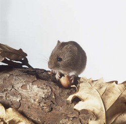

Responder a este comentário
O bicho e o nome do bicho
por Jorge Furtado em 29 de abril de 2008- Você deve dizer o que pensa, disse a Lebre de Março.
- Eu sempre digo o que penso - respondeu prontamente Alice.
- Quer dizer, às vezes. Pelo menos eu sempre penso o que digo. Tanto faz, dá no mesmo.
- Não dá no mesmo, nem um pouco! - disse o Chapeleiro.
- Você acha que tanto faz dizer "eu vejo tudo que como" ou "eu como tudo o que vejo"?
- Tanto faz dizer - acrescentou a Lebre de Março - "eu gosto de tudo que tenho" ou "eu tenho tudo que gosto"?
- Tanto faz dizer - disse o (*), que parecia continuar dormindo enquanto falava - "eu respiro enquanto durmo" ou "eu durmo enquanto respiro"?
- No seu caso, tanto faz - disse o Chapeleiro, e aqui a conversa parou.
Aventuras de Alice no País da Maravilhas, de Lewis Carroll, tradução de Jorge Furtado e Liziane Kugland, editora Objetiva, 2008.
*

Um doormouse
{kind=link}
Quando Alice encontra o Chapeleiro Louco e a Lebre de Março para tomar chá eles estão acompanhados de um "dormouse". Lewis Carroll faz muitas piadas sobre o comportamento do dormouse: ele dorme e acorda todo tempo, fala enquanto dorme e quase dorme enquanto fala.
O dormouse (Muscardinus avellanarius) é um mamífero roedor da família Gliridae (também chamada Myoxidae ou Muscardinidae). Existe na Europa, na África e Ásia, algumas espécies são encontradas nas ilhas britânicas. Tem esse nome devido a sua principal característica, o longo período de hibernação: um dormouse dorme até seis meses por ano.
A palavra "mouse" vem do inglês antigo "mus", que é latim, rato, e aparece nesta mesma forma em línguas proto-germânicas, em norueguês antigo e em sânscrito. A palavra "dormouse" vem do latim "dormire" (dormir) como em "dormant" (adormecido) ou "dormitory" (dormitório) + mouse. O plural de "dormouse" é "dormice".
Em português, que bicho é este? O Houaiss registra a palavra glirídeo, "família de roedores do Velho Mundo, conhecidas vulgarmente como arganazes". Fosse um estudo sobre roedores, dormouse seria, portanto, arganaz. Existem 34 espécies diferentes de dormice, nenhuma no Brasil. Cada um dos tradutores de Carroll escolhe um nome brasileiro para o dormouse: arganaz, caxinguelê, leirão, marmota, ratão do banhado, rato silvestre, rato do campo.
O problema é que nenhum destes nomes lembra sono ou dormir e sem isso as piadas de Carroll simplesmente não funcionam. Ana Maria Machado, em sua ótima tradução (Editora Ática, 2000) percebeu que a questão não era o bicho mas o nome do bicho e na sua história o dormouse virou "dormundongo". É uma boa palavra, engraçada, mas dormundongos não existem. Grifos e Falsas Tartarugas também não existem e aparecem na história, mas dormice existem, as crianças inglesas sabiam disso e se Carroll quisesse inventar um bicho com o nome sonolento, nada o impediria de fazê-lo.
Eu e a Liziane escolhemos traduzir dormouse por preguiça (*), um bicho inteiramente diferente mas com um nome sonolento.
O bicho preguiça, ou bicho-preguiça, é um mamífero da ordem Xenarthra, como o tatu e o tamanduá. Existe apenas na América do Sul, especialmente no Brasil, onde já foram encontradas seis espécies: preguiça-comum, preguiça-de-bentinho, preguiça-de-coleira, preguiça-de-dois-dedos, preguiça-real. A preguiça tem este nome porque se movimenta muito lentamente e dorme 14 horas por dia.
A palavra preguiça, segundo Antônio Geraldo da Cunha, vem do latim pigritìa e... Chega... Deu preguiça. O resto, você mesmo pesquisa.
*
Para saber mais sobre o bicho dormouse:
http://en.wikipedia.org/wiki/Dormouse
Para saber mais sobre o bicho preguiça:
http://pt.wikipedia.org/wiki/Bicho-preguiça
Para saber mais sobre bichos europeus:
Para saber mais sobre a palavra dormouse:
Dicionário on-line Latim-Inglês-Latim: